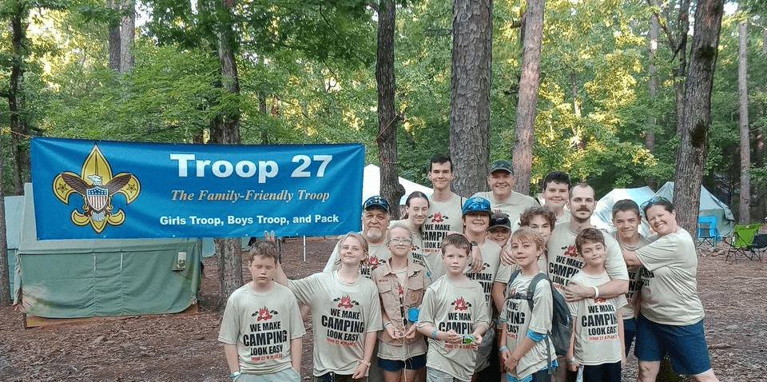

About Troop 27B and G

Troop 27 B and G operates out of Plano, TX. Our troop participates in many scouting activities during the year. Our fundraisers pay for those activities, especially our summer camps! Our younger scouts go to Camp Hale in Oklahoma, where they work on merit badges they need for rank advancement and learn fun things like sailing, robotics, or welding. Our older scouts go on high adventure where they get to summit mountains, backpack across country, raft river rapids, zipline across canyons, and learn to ride ATVs.
Summer Camps
Camp Hale is near Taihina, Oklahoma and is adjacent to the Ouachita National Forest.
2022 High Adventure
Z-base - Our troop did a 7 day trek where we canoed across a lake, shot black powder rifles at the old west range, conquered a 4 story climbing tower with zipline, shot clay pigeons at an 18 station shotgun course, got ASI ATV rider training and did a trail ride, and knee-boarded at the cable-wake park.
.png)
.png)
2023 High Adventure
Philmont 12 day trek
.jpg)

2024 High Adventure
Colorado high adventure - Camping and sand sledding at Great Sand Dunes National Park, all-day rafting on the Arkansas river with class IV rapids, Multiple level ropes course and zipline course, camping and back-country hiking to the bottom of the Black Canyon of the Gunnison, hiking to the summit of Mt Elbert the highest peak in Colorado.
.jpg)
.jpg)